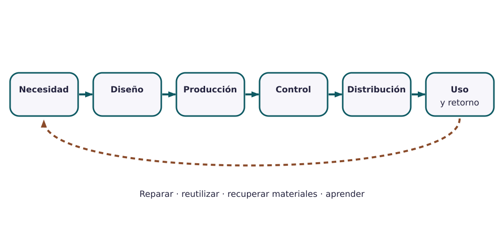

Contenido
Un producto no empieza ni termina en la fábrica
Antes de que una botella llegue a tu mochila, alguien decidió de qué material hacerla, cómo fabricarla, cómo comprobar que no pierde agua y cómo llevarla hasta la tienda. Y cuando la tires, alguien tendrá que decidir qué se hace con ella. En esta unidad vas a seguir ese recorrido completo de un producto real.

AmpliarEl reto
Tu equipo será el departamento de producción de una empresa que fabrica un producto cotidiano. La empresa es inventada, pero el producto y sus normas son reales. La empresa os entrega un expediente con los datos que necesitáis: materiales, pasos de fabricación, medidas importantes, problemas de calidad, leyes que debe cumplir y qué pasa con el producto al tirarlo.
Con ese expediente rellenaréis un dosier de nueve apartados. No vais a fabricar nada: vais a explicar cómo se fabrica, cómo se controla, cómo se mejora, qué exige la ley para venderlo y cómo llega a las personas y vuelve.
Los productos
Cada equipo elige uno de estos cuatro. Los ejemplos del libro usan siempre una botella reutilizable de acero inoxidable: verás cada apartado del dosier resuelto con ella antes de hacer el tuyo.
| Producto | Qué lo hace interesante |
|---|---|
| Lata de bebida de aluminio | Se fabrican millones al día; casi todo es control de medidas y de fugas. |
| Bolígrafo retráctil | Muchas piezas pequeñas que tienen que encajar bien. |
| Casco de bicicleta | Protege la cabeza: la ley exige ensayos antes de venderlo. |
| Hervidor eléctrico | Lleva electricidad y agua caliente: seguridad y reciclaje de aparatos. |
Los cuatro expedientes están en la página Expedientes de las empresas.
Qué entregarás
Dosier del diseño al mercado. Se empieza en la primera sesión, en cada sesión
se completa la parte que indica el mapa de la unidad y se entrega en Moodle al empezar la última sesión, con el nombre
dosier_diseno_mercado.pdf.
Bitácora individual. Tres entradas cortas sobre lo que has aportado tú:
una fuente que has comprobado, una decisión que propusiste y un cambio que hiciste después de
recibir comentarios. Se entrega en Moodle al final de la sesión de auditoría, con el nombre
bitacora_decisiones.pdf.
La unidad termina con una prueba escrita individual sobre un producto nuevo.
Cómo trabajar con las plantillas
Crea tus copias de trabajo
- Crear una copia del dosier del equipo (lo hace una sola persona y lo comparte con su equipo)
- Crear una copia de la bitácora individual (cada persona la suya)
- Entra con tu cuenta del instituto, abre el enlace y pulsa Hacer una copia.
- El dosier se comparte solo con las personas del equipo (botón Compartir). El día de la auditoría, también con el equipo que os revisa, como Comentador.
- Cada tabla de la plantilla trae una fila de ejemplo en gris con la botella: sustituidla por la vuestra.
- Para entregar: Archivo → Descargar → Documento PDF y sube ese PDF a la tarea de Moodle. No pulses Entregar antes del día indicado.
Mapa de la unidad
| Página | Qué haréis | Apartado del dosier |
|---|---|---|
| Del problema al mercado | Elegir el producto, decir qué tiene que hacer y de dónde salen los datos | 1 y 2 |
| Ciclo de vida físico | Seguir el producto desde la materia prima hasta que se tira | 3 |
| Producción y control de calidad | Dibujar cómo se fabrica y decidir qué se comprueba | 4 |
| Metrología y tolerancias | Medir en el taller y decidir si un lote vale | 5 |
| Mejora continua y ciclo PDCA | Resolver un problema de calidad con datos | 6 |
| Normas, mercado y retorno | Qué exige la ley, cómo se vende y cómo vuelve | 7 y 8 |
| Auditoría y repaso | Revisar el dosier de otro equipo, corregir el vuestro y preparar la prueba | 9 |
| Entrega y prueba individual | Entregar el dosier y hacer la prueba | — |
Páginas de apoyo: Expedientes de las empresas · Leer el calibre · Glosario.